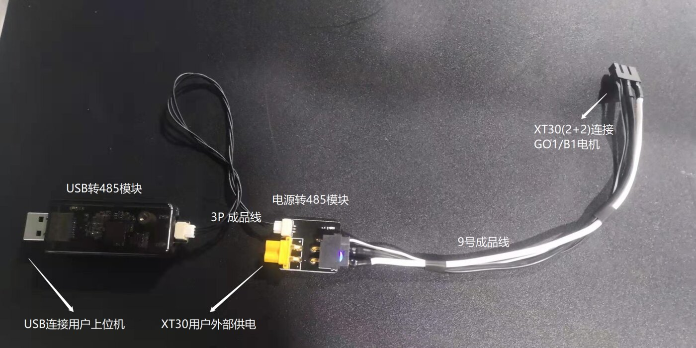
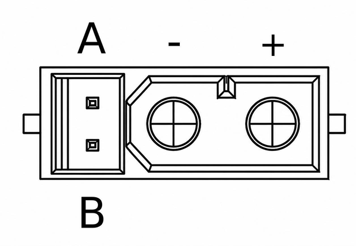

| RS-485 关键参数 | |
|---|---|
| 波特率 | 6,000,000 baud |
| 字符格式 | 8 数据位，无校验，1 停止位（8N1） |
| 流控 | 无 |
| 双工方式 | 半双工，两线制 |
| 总线访问 | 一个控制器；电机只回复发给自己 ID 的指令 |
| 电机 ID | 0-14 |
| 字节顺序 | 低位字节在前（小端） |
| 指令帧 | 20 字节，帧头 0xFE 0xEE |
| 反馈帧 | 26 字节，帧头 0xFC 0xEE |
| 校验 | CRC-32，多项式 0x04C11DB7，初值 0xFFFFFFFF |
| 轮询频率（G1 控制器） | 每台电机约 1,313 Hz（总线上 5 台电机） |
| 一次指令 + 反馈 | 46 字节，线上约 77 µs |
本文档说明怎样通过 RS-485 与 Unitree G1 手臂关节电机通信。内容来自实际记录的通信数据和电机测试，未使用厂商提供的 G1 关节电机文档。结论分为三类：已验证 表示已核对通信数据或已在电机上测试；根据数据推测 表示根据数据推测，还没有单独测试；暂按此值 表示暂用宇树公开的 GO-M8010-6 协议中的数值，尚未在 G1 电机上确认。
其他硬件或固件版本的协议可能不同。请根据自己的硬件核对，使用风险由使用者承担。
如果只是想使用驱动，请先看项目 README，再按 Python、C++ 或 MATLAB 文件夹中的说明安装。先接线，再扫描 ID，最后测试零力矩和位置保持。扫描会发送空闲指令，不是只接收数据；不要在位置保持过程中扫描。
启用电机（运行模式、零力矩）后，关节可以自由转动；停止电机（空闲模式）时，关节受到被动制动，但不会主动保持目标角度。控制循环必须持续向每台已启用的电机发送指令。测试前请托住可能下落的负载。
G1 每条手臂的关节电机共用一条 RS-485 通信线路（总线），由一个控制器发送指令。控制器每次向一台电机发送 20 字节的指令，电机回复 26 字节的数据，包括位置、速度、力矩、温度、供电电压和状态字。每条指令同时包含力矩、速度、位置、两个增益和工作模式，不需要另发一种格式的指令来启用电机或切换模式。
| 硬件 | 所做工作 |
|---|---|
| 机器人上的 G1 手臂总线，电机 ID 0-4 | 只接收、不发送。记录了开机、零力矩、阻尼和锁定站立时的数据；解析了约 380 万对指令和回复。 |
| 独立的腕部组件，电机 ID 4、5、6，无控制器，24 V 供电 | 用按本文档构造的数据帧直接驱动：扫描、零力矩、位置控制、前馈、速度测试。 |
| 项目 | 数值 |
|---|---|
| 通信接口 | RS-485，半双工，两线制 已验证 |
| 波特率 | 6,000,000 baud，8 数据位，无校验，1 停止位 已验证 |
| 字节序 | 多字节数值都先放低位字节（小端格式） 已验证 |
| 连接方式 | 一个控制器，最多 15 台电机，ID 0-14 根据数据推测 |
| 访问方式 | 电机只回复发给自己 ID 的指令 已验证 |
| 指令 / 反馈长度 | 20 字节 / 26 字节 已验证 |
| 控制器轮询频率 | 总线上 5 台电机时，每台约 1,313 帧/秒（每 0.76 ms 轮询一圈）已验证 |
| 试过的最低频率 | 每台约 340 帧/秒，电机可正常工作 已验证 |
| 传输用时 | 一帧指令加一帧反馈共 46 字节，6 Mbaud 下约 77 µs |
许多 USB 转串口适配器达不到 6 Mbaud。本文档的全部工作使用基于 FTDI FT232H 的 RS-485 适配器。在 Linux 下必须通过
TCSETS2/BOTHER ioctl 设置该波特率；并把 FTDI 的 latency timer 设为 1 ms。
独立测试的电机通过宇树为其其他电机提供的 RS-485 配件套装驱动。下图取自宇树电机 SDK 开发指南，图中为 GO1/B1 电机；G1 关节电机的接法相同。没有核对线的颜色。

| 部件 | 连接 |
|---|---|
| USB 转 485 模块 | USB 接电脑 |
| 3P 成品线 | 连接 USB 模块与电源模块 |
| 电源转 485 模块 | 把 RS-485 信号与电源合到一起；XT30 输入接外部电源 |
| 9 号成品线 | 连接电源模块与电机 |
| XT30(2+2) 插头 | 接电机：两根电源线和两根 RS-485 信号线 |

本文档的全部独立测试工作使用 24 V 电源；机器人上的总线电压约为 48 V。在 24 V 下最高转速约为转子每秒 39 圈；从最高速度用大阻尼制动可能把电源电压拉低到约 15 V，并出现持续保留的故障 0x8（见“状态字”）。不要把机器人的控制器接在总线上，通电前请检查接线。
控制器用该帧控制一台电机。电机一直执行该指令，直到收到下一帧指令。
| 字节位置 | 说明 | 类型 |
|---|---|---|
| DATA[0] | 帧头，0xFE | - |
| DATA[1] | 帧头，0xEE | |
| DATA[2] | 电机 ID 与模式（见“ID 与模式字节”） | uint8 |
| DATA[3] | 序列字节（见“序列字节”） | uint8 |
| DATA[4]-DATA[5] | 直接给定的力矩 T（前馈） | int16 |
| DATA[6]-DATA[7] | 目标速度 W | int16 |
| DATA[8]-DATA[11] | 目标位置 POS | int32 |
| DATA[12]-DATA[13] | 位置增益 KP | int16 |
| DATA[14]-DATA[15] | 速度（阻尼）增益 KD | int16 |
| DATA[16]-DATA[19] | DATA[0]-DATA[15] 的 CRC-32 | uint32 |
POS、KP、KD 的位置已通过机器人的状态切换以及直接驱动独立电机的测试得到确认；T 在独立测试中确认为直接给定的力矩；W 作为速度前馈使用，效果符合预期。已验证
力矩 = T + KP × (POS − 实测位置) + KD × (W − 实测速度)
这是宇树电机常见的控制方式：把力矩、位置和速度三部分的作用相加。根据数据推测 各项的作用与公式一致；KP 与 KD 对应的物理单位尚不清楚。公式用于说明各部分的作用，不能直接把所有原始整数代入来计算 N·m。所有字段为零时输出零力矩：关节可自由转动。
| 位 | 名称 | 说明 |
|---|---|---|
| 7 | FLAG | 仅用于指令帧。机器人的控制器在开始轮询 2.6 s 后把它设为 1 并一直保持。含义未知。进入运行模式并不需要该位。正常工作时反馈帧中恒为 0。 |
| 6-4 | MODE | 0 = 空闲：电机应答，但忽略指令。1 = 运行：按上述方式控制电机。7 = 重启。见“模式取值”。反馈帧中该字段表示电机当前实际所处的模式。 |
| 3-0 | ID | 电机地址，0-14。在宇树公开的 GO-M8010-6 协议中 15 为广播地址；本文档的工作中从未发送过该地址。 |
| 指令 DATA[2] | 反馈 DATA[2] | 出现时机 |
|---|---|---|
| 0x00 + ID | 0x00 + ID | 上电后开始轮询时；总线扫描 |
| 0x80 + ID | 0x00 + ID | 机器人启动过程，开始轮询后 2.6 s 至 26 s |
| 0x90 + ID | 0x10 + ID | 正常工作（运行模式） |
以下每个取值均在一台独立测试的电机（ID 4）上单独测试：先让其余字段全为零；对模式 3-5，再发送在模式 1 下能带动关节的较小的力矩、位置、速度和增益指令，并做了运动中切换模式的滑行测试。已验证 模式 0、3、5 之间的区别尚未找到。
| MODE | 行为 |
|---|---|
| 0 | 空闲。指令被忽略，关节处于被动制动状态：把关节加速到约 800 速度计数后切换到该模式，约 10 ms 停下。控制器在启动和扫描时使用。 |
| 1 | 运行。第一帧即进入，反馈帧报告模式 1。状态字非零时拒绝进入。 |
| 2 | 被忽略：电机保持模式 0。无运动。 |
| 3 | 被接受（反馈帧报告模式 3）。力矩、速度、位置和增益字段均被忽略。关节与模式 0 一样处于制动状态：约 10 ms 停下。静止时力矩读数恰为 0。 |
| 4 | 被接受。指令字段被忽略。关节自由滑行，与模式 1 下全零指令相同：从同样的速度停下需要 25-64 ms。 |
| 5 | 被接受。指令字段被忽略。关节与模式 0、3 一样处于制动状态。 |
| 6 | 设置位置（零点标定），机器人的标定流程使用该模式。需要特定的数据内容，见“零点”；数据全为零时被忽略，电机保持模式 0。 |
| 7 | 重启。一帧即可，FLAG 为 0 或 1 都可以。电机继续应答约 5 ms，随后不回复，直到重启开始后约 300 ms，之后以模式 0、状态字 0 恢复应答。可清除持续保留的故障。位置读数可能发生偏移（见“上电或重启后的位置”）。 |
上电后最初的几帧中 DATA[3] 为 0x00。进入连续轮询后，它大约每 8 帧（约 6 ms）变化一次。机器人的五台电机中有三台在 0x80 与 0x90 之间交替；另外两台每次变化时低位加一，同时第 7 位翻转。其用途未知。独立测试的电机在 0x80/0x90 交替的情况下进入运行模式并正常工作；DATA[3] = 0 时同样可以进入运行模式，因此进入运行模式并不要求特定规律。
收到自己 ID 的指令后，电机会回复，空闲模式下也是如此。
| 字节位置 | 说明 | 类型 |
|---|---|---|
| DATA[0] | 帧头，0xFC | - |
| DATA[1] | 帧头，0xEE | |
| DATA[2] | 电机 ID（位 3-0）与当前模式（位 6-4） | uint8 |
| DATA[3] | 线圈（绕组）温度，°C 根据数据推测 | uint8 |
| DATA[4] | 外壳温度，°C；读数比线圈温度低 0-5 根据数据推测 | uint8 |
| DATA[5] | 供电电压，每个计数 0.5 V 已验证 | uint8 |
| DATA[6]-DATA[7] | 力矩 | int16 |
| DATA[8]-DATA[9] | 速度 | int16 |
| DATA[10]-DATA[13] | 位置，多圈 | int32 |
| DATA[14]-DATA[17] | 状态字；正常工作时为 0（见“状态字”） | uint32 |
| DATA[18]-DATA[19] | 未知；2,600-3,050，有噪声 | uint16 |
| DATA[20] | 未知；0 | uint8 |
| DATA[21] | 未知；多数电机为 0，机器人上有两台电机每帧都在变化 | uint8 |
| DATA[22]-DATA[25] | DATA[2]-DATA[21] 的 CRC-32 | uint32 |
发送频率：每帧指令对应一帧反馈，因此与控制器一致（机器人上约 1.3 kHz）。
位置：与指令位置单位相同；保持位置时与目标相差不超过 1-2 个计数。已验证
供电电压：24 V 测试电源下读数为 24.0-24.5 V，机器人（电池供电）上为 47.0-48.5 V，偶有 44.5 至 50 V 的短暂波动。已验证
反馈帧的帧头为 0xFC 0xEE，且反馈帧的校验不包含帧头。这两点既不同于指令帧，也不同于宇树公开的 GO-M8010-6 协议（其反馈帧头为 0xFD 0xEE，采用 16 位校验）。
CRC-32，多项式 0x04C11DB7，初值 0xFFFFFFFF，不做位反转，不做结果异或。数据按 32 位小端字处理，每个字从最高位开始送入。结果按小端存放。这就是宇树公开的 A1/B1 电机 SDK 中的 crc32_core 函数。已验证（核对了 380 万帧）
uint32_t crc32_core(const uint32_t *words, uint32_t count) {
uint32_t crc = 0xFFFFFFFF;
for (uint32_t i = 0; i < count; i++) {
uint32_t data = words[i];
for (uint32_t bit = 0x80000000; bit; bit >>= 1) {
if (crc & 0x80000000) crc = (crc << 1) ^ 0x04C11DB7;
else crc <<= 1;
if (data & bit) crc ^= 0x04C11DB7;
}
}
return crc;
}
/* 指令帧: crc32_core(frame, 4) 字节 0-15
反馈帧: crc32_core(frame + 2, 5) 字节 2-21（先复制到对齐的缓冲区） */
| 测试输入（十六进制） | CRC | 存放为 |
|---|---|---|
| FE EE 90 80 00 00 00 00 00 00 00 00 00 00 00 00 | 0x06411E9B | 9B 1E 41 06 |
| FE EE 00 00 00 00 00 00 00 00 00 00 00 00 00 00 | 0x79204680 | 80 46 20 79 |
均抓取自机器人。
| 含义 | 字节 |
|---|---|
| 空闲轮询，ID 0（也用于扫描总线） | FE EE 00 00 00 00 00 00 00 00 00 00 00 00 00 00 80 46 20 79 |
| 运行，零力矩，ID 0 | FE EE 90 80 00 00 00 00 00 00 00 00 00 00 00 00 9B 1E 41 06 |
| 运行，纯阻尼（KD 25），ID 0 | FE EE 90 80 00 00 00 00 00 00 00 00 00 00 19 00 54 1E D6 14 |
| 运行，保持位置 25,032，KP 450，KD 10，ID 0 | FE EE 90 80 00 00 00 00 C8 61 00 00 C2 01 0A 00 71 DC 7C 64 |
反馈帧解码示例：
FC EE 12 24 23 61 FF FF F8 FF C6 3D FD FF 00 00 00 00 CC 0B 00 C8 25 63 AD 8C 12 ID 2，模式 1（运行） 24 23 线圈 36 °C，外壳 35 °C 61 97 x 0.5 = 48.5 V FF FF 力矩 -1 F8 FF 速度 -8 C6 3D FD FF 位置 -180,794 00 00 00 00 状态字 0（无故障） CC 0B 3,020（未知） 00 C8 未知 25 63 AD 8C CRC-32 0x8CAD6325，对从 "12" 到 "C8" 的 20 个字节计算
控制器从不改变帧的类型。机器人的行为完全由运行模式指令中的各字段决定。已验证
| 机器人状态 | 指令内容 |
|---|---|
| 零力矩 | T、W、POS、KP、KD 全为 0 |
| 阻尼 | 仅 KD。手臂 ID 0-4 上观察到的数值：25、25、0、1、0 |
| 锁定站立 | POS = 当前位置，随后由控制器逐步过渡到站立姿态。ID 0-4 上观察到的 KP / KD：450/10、300/5、100/2、300/5、20/1 |
时间从总线上出现第一帧起算；第一帧大约在机器人开机一分钟后出现。
| 时间 | 控制器 | 电机 |
|---|---|---|
| 0 s | 18 帧，每台电机 3-4 帧：DATA[2] = ID，DATA[3] = 0，T = −128，其余为 0 | 全部以模式 0 应答 |
| 0-7.0 s | 无数据 | - |
| 7.0 s | 开始连续轮询，模式 0，所有字段为 0 | 模式 0 |
| 7.0-7.1 s | 仅 ID 2 和 3：约 114 帧，DATA[4]-DATA[15] 为一组固定的 12 字节数据 | ID 2 和 3 的反馈由一段固定数据变为正常的位置、温度等读数 |
| 9.6 s | FLAG 设为 1（0x80 + ID） | 模式 0 |
| 33.2 s | 同一轮内所有电机 MODE = 1（0x90 + ID） | 从下一帧起报告模式 1 |
因此，启用电机就是在普通指令帧中把 MODE 从 0 改为 1；电机在反馈帧中确认。
所观测总线上的 ID 2 和 3 在收到一组 12 字节数据之前不上报位置和温度；在此之前，其反馈帧的 DATA[3]-DATA[13] 为一段数据，DATA[14]-DATA[15] 为 00 80。这是一种“电机先发一段数据、控制器再返回对应数据”的启动验证过程（挑战-应答）。之后的一次重启中，两段数据都变了。算法未知，因此离开机器人的控制器无法启动这两台电机。三台独立测试的电机（ID 4、5、6）不需要这一步。
以下流程已在 由 24 V 电源独立供电的电机 ID 4、5、6 上成功使用：
第 3、4 步照搬了机器人的顺序，但并非必需：处于空闲轮询中的电机，在收到第一帧 MODE = 1、FLAG 为 0、DATA[3] = 0 的指令后即进入运行模式。已验证
如果停止轮询，电机至少在 0.5 s 内保持运行模式，并在 1.0 s 内回到空闲模式（状态字为 0），之后处于被动制动状态。已验证
正常工作时反馈帧的 DATA[14]-DATA[17] 为 0。观察到的非零值：
| 数值（uint32） | 情形 |
|---|---|
| 0x00000008 | 供电电压读数跌到约 15 V 时出现。在三台独立测试的电机上以两种方式见到，都是在 24 V 测试电源下用阻尼指令从最高速度制动时发生的。KD 80 时力矩读数跳到 419-689 计数，电压立即跌到 15-19 V，该故障会持续保留。限力矩制动（约 180 计数）时电压先升到 30 V，约 130 ms 后跌到 10 V；电压恢复后电机自行重启。该状态存在期间电机保持模式 0，不接受 MODE = 1。 |
| 0x00040000 | 机器人 ID 2 和 3 在启动过程中出现约 0.4 s，之后工作正常。 |
| 0x00008000 | 机器人 ID 2 和 3 在收到 12 字节数据之前（在该状态下这几个字节可能并不是状态字）。 |
因此，0x00000008 很可能表示供电电压过低（欠压），原因是阻尼制动让电源电压发生了大幅变化。从同样的速度切换到空闲模式时，电压保持在 24.0-24.5 V，状态字为 0。其余各位的含义未知。清除故障：发送一帧 MODE = 7（重启），或将电机电源断开约 10 s。以下做法均不能清除：空闲轮询、运行模式指令、阻尼指令、上电探测帧、15 s 不发送指令。
位置读数是跨多圈连续计数的，但在断电重启或发送重启指令之后，读数可能相差输出轴转一整圈所对应计数的整数倍。已观察到：ID 4 偏移 524,288 计数（转子 16 圈），ID 6 偏移 819,200 计数（转子 25 圈），正负方向都出现过；也有几次重启没有偏移。由此可得这两个关节的减速比分别为 16:1 和 25:1。根据数据推测 由于偏移总是整数个输出轴圈数，电机读数仍能反映关节在一圈内的位置。保存的限位或零点需要加上或减去同样的整圈计数，才能继续使用。每次上电或重启之后都应对照读数检查。
位置读数就是关节角度：在机器人手臂总线（ID 0-4）上，输出轴每圈 524,288 计数（16 × 32,768），0 对应关节零位。已验证
零点通过 MODE = 6 设置。这是在机器人执行自身关节标定时抓取到的，尚未用我们自己构造的帧重复验证。根据数据推测 控制器的流程如下：
| 步骤 | 数据帧 |
|---|---|
| 1 | 把每个关节压向一端限位：每台电机 10 帧，间隔约 26 ms，DATA[2] = 0x10 + ID（运行模式，FLAG 为 0），T = +16 或 −16，KD = 2，其余为 0。 |
| 2 | 每台电机一帧：DATA[2] = 0x60 + ID，DATA[3] = 0，DATA[4]-DATA[5] = 00 FC，DATA[6]-DATA[9] = 该限位处的关节角度（int32，231 对应输出轴一圈），DATA[10]-DATA[15] 为固定的 6 字节常数。反馈帧报告模式 6。 |
| 3 | 每台电机一帧重启指令（0x70 + ID）。电机约 0.7 s 不回复，之后应答空闲轮询。 |
发送给 ID 0-4 的五个角度依次为 +153.00°、+129.00°、+150.00°、−59.99° 和 +113.00°；此时每台电机的位置读数与“角度 × 524,288 / 360°”相差不超过 0.01 %。五台电机的 6 字节常数相同；该常数记录在项目笔记中，不同机器人或固件版本之间是否相同尚不清楚。零点设置很可能是永久性的；在不知道关节真实角度的情况下不要发送模式 6。
如果不重新标定，也可以在软件中保存零点：在已知姿态下记录读数，每次上电后，给保存的数值加上或减去整圈计数，使其与当前读数对应。
| 测量项目 | 比例 | 依据 |
|---|---|---|
| 位置 | 每个计数 2π / 32,768 rad（转子每圈 32,768 计数）。重启后的跳变恰为 16 × 32,768 和 25 × 32,768 计数，支持这一比例 | 根据数据推测 |
| 速度 | 每个计数 2π / 256 rad/s；由位置比例和下一行的关系得出 | 根据数据推测 |
| 速度与位置的关系 | 1 个速度计数 = 每秒 128 个位置计数（用有滞后的估计方法实测为 114-124） | 已验证 |
| 力矩 | 每个计数 1 / 256 N·m | 暂按此值 |
| 指令力矩与反馈力矩 | 在测试分辨率内单位相同：把反馈的摩擦力矩作为前馈给出后，摩擦的影响被抵消 | 已验证 |
| 供电电压 | 每个计数 0.5 V | 已验证 |
| 阻尼力矩 | 0.005 × KD × 速度读数（力矩计数；在恒定力矩下，等速度稳定后测得，KD 10-80 时为 0.0049-0.0051）。受电机力矩上限限制：见到的最大值为 400-700 计数 | 已验证 |
| 力矩读数 | 电机实际输出的总力矩（前馈加位置项和阻尼项），而不只是前馈值 | 已验证 |
| KP | 原始整数；对应的物理单位未确定 | 未知 |
| 减速比 | 独立测试中的 ID 4 为 16:1，ID 6 为 25:1，由重启跳变的大小得出；ID 5 的行程与 ID 6 相同，按 25:1 处理 | 根据数据推测 |
以上位置、速度和力矩的单位都按电机内部的转子计算，而不是按关节输出轴计算。输出轴的位置和速度需除以减速比。
除注明外，均在 24 V 下独立测试的腕部组件（ID 4、5、6）上测得。这些是对单个样机的观测结果，不是额定参数。
| 通信 | |
|---|---|
| 波特率 | 6,000,000 baud，8N1 |
| 指令 / 反馈长度 | 20 / 26 字节 |
| 机器人使用的轮询频率 | 每台电机约 1,313 Hz |
| 独立测试中使用的轮询频率 | 每台电机约 340 Hz（Python，三台电机） |
| 反馈帧错误 | 1,969,826 帧反馈中有 1 帧校验错误（机器人抓包） |
| 运动 | |
|---|---|
| 达到的最高速度 | 三台电机均约为每秒 1,275,000 个位置计数（约为转子每秒 39 圈），与指令值无关。折算到输出轴：ID 4 约 15.3 rad/s，ID 5、6 约 9.8 rad/s |
| 两端限位之间的行程，ID 4 / 5 / 6 | 331,007 / 425,735 / 427,100 计数，折算到输出轴约 227° / 187° / 187° |
| 从 800 速度计数停下所需时间，ID 4 | 模式 0、3、5 约 10 ms；自由状态（模式 1 和 4，零指令）25-64 ms |
| 从最高速度切换到空闲模式停下 | ID 4 / 5 / 6 分别为 18 / 27 / 24 ms，滑行 1,083 / 7,757 / 6,898 计数，电压 24.0-24.5 V，无故障 |
| 从最高速度用阻尼制动 | KD 80：力矩读数 419-689（阻尼项要求的约为 4,000），电源电压跌到 15 V，故障持续保留。约 180 计数：电源电压升到 30 V 后断电 |
| 跟踪平稳的增益 | KP 300；KD 40（ID 4）、80（ID 5、6） |
| 过小而无法跟踪的增益 | KP 20、KD 1：ID 5、6 会明显滞后，或在负载下漂移，取决于姿态（在某一姿态下 KP 100、KD 2 也不行） |
| 与方向有关的摩擦，ID 4 / 5 / 6 | 约 4 / 19 / 12 个力矩计数 |
| 仍能跟踪的最快全行程正弦 | 周期 0.8 s，幅度为行程的 80 %；最大滞后 1,505 / 8,656 / 7,266 计数 |
| 采用上述增益时的速度波动 | 峰值速度的 3-4 % |
| 电机返回的读数 | |
|---|---|
| 供电电压读数 | 24.0-24.5 V（独立测试）；机器人上为 47.0-48.5 V，随电池放电在一天内逐渐下降，偶有 44.5 和 50 V 的短暂波动 |
| 温度读数 | 测试期间线圈 28-39 °C，外壳 24-38 °C；重启后外壳读数立即等于线圈读数 |
| 位置分辨率 | 1 计数；在机器人上静止保持时与目标相差 1-2 计数以内 |
随本文档提供按此协议实现的 Python、C++ 和 MATLAB 驱动（g1motor），三者的命名相同。以 Python 为例：
下面只启用并持续控制 ID 4。先扫描确认 ID，再把它替换成自己的电机 ID。增益来自 24 V 腕部测试，不适用于所有关节。bus.read() 在已启用的电机上会发送零力矩指令，中断位置保持；保持时应使用 command() 返回的读数。没有有效回复时返回 None。
from g1motor import MotorBus
with MotorBus() as bus: # 6 Mbaud；总线被占用时拒绝打开
print(bus.scan()) # {4: MotorState(...), ...}
start = bus.enable([4]) # 运行模式，零力矩
target = start[4].pos # 保持启用时的位置
for _ in range(1000):
state = bus.command(4, target, 0, 0, 300, 40)
# 退出时：回到空闲模式，由其对关节制动
要使用输出轴角度，可通过 Joint 设置减速比、限位和软件零点。限位必须按自己的硬件测量，并在每次上电或重启后核对。力矩到 N·m 的换算比例尚未实测。
| 版本 | 日期 | 修改内容 |
|---|---|---|
| V0.1 | 2026-11-25 | 首次发布，基于一天的抓包和电机测试。 |
| V0.2 | 2026-11-25 | 逐个测试了模式 2-7，并对模式 3-5 做了特性测试；重启（模式 7）可清除故障；状态字 0x8 的成因；重启后的位置偏移。 |
| V0.3 | 2026-11-25 | 减速比及输出轴侧数据；位置比例得到支持；制动建议；零点；SDK 的关节支持。 |
| V0.4 | 2026-11-25 | 抓取了机器人的标定过程：模式 6 设置零点；位置读数即关节角度；确认挑战-应答。 |
| V0.5 | 2026-11-25 | 全面复测之后：阻尼系数更正为 0.005；更正机器人上的电压范围；FLAG 和序列字节并非必需；停止轮询后的行为；通过切换到空闲模式来停止。 |
| V0.6 | 2026-11-26 | 接线：配件套装、电机接口引脚定义、24 V 测试电源。 |
| V0.7 | 2026-11-26 | 用更简单的中文解释术语；补充入门步骤、计数与物理单位的区别，并改进驱动示例。 |